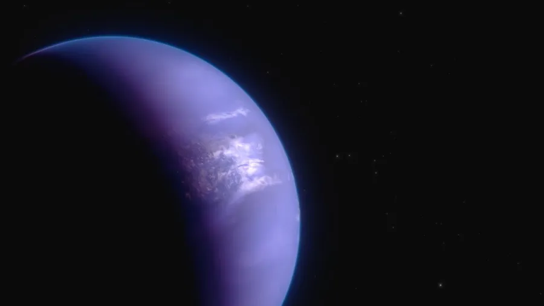

April 30, 2024
WASP-43 b: weather map of a hot gas giant
The James Webb Space Telescope was used to map the weather on the hot gas giant WASP-43 b. The Jupiter-sized planet orbits its star, roughly 280 light-years away, in about 19.5 hours and probably always turns the same side toward it.
The dayside has an average temperature of about 1,250 degrees Celsius, the nightside about 600 degrees. The nightside is probably covered in thick, high clouds that are thought to consist of tiny mineral grains. A surprising lack of methane there suggests strong winds that mix the gases around the planet.
Sources: ESA/Webb: "Hot gas giant exoplanet WASP-43 b (artist's concept).", 2024-04-30; ESA/Webb: "Hot gas giant exoplanet WASP-43 b (MIRI phase curve and temperature map).", 2024-04-30